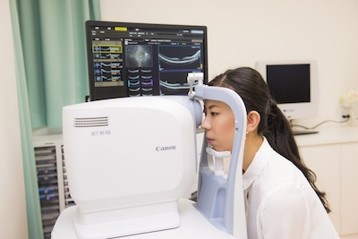

綾瀬うえむら眼科の院内をご案内致します
- point 01 : 受付
- 明るい笑顔でみなさまをお迎えします！
電子カルテシステムにより、患者様のこれまでの症状や治療内容をすぐに確認できます
院内はすべてバリアフリーです
- point 02 : 待合室
- お仕事帰りでもリラックスいただけるように配慮した清潔で柔らかいデザインの空間です
- point 03 : 検査室
- 主な検査はこちらで行います
オープンな空間により、効率よく検査が進みます
- point 04 : 視力検査
- 十分な距離と最新の測定機により正確に検査できます
自動光量調整により明るく、旧式の電光板式より判読しやすいため、患者様本来の視力が測れます
- point 05 : 診察室
- 診察はこちらで行います
検査機器との連動により、撮像による画像診断と測定データが大画面に表示されますので、適切な診断ができ、症状や治療について分かりやすく説明できます
また、電子カルテに記録されますので、いつでも振り返ることができます
- 

- point 06 : ＯＣＴ（光干渉断層計）
- 眼底の網膜（特に黄斑）や視神経をＣＴスキャンのように断面で調べる検査機器です
以前は大学病院クラスでなければ詳しい観察が困難だった内部の様子を調べることで、加齢黄斑変性や中心性漿液性網脈絡膜症、緑内障など多くの疾患の診断の一助として非常に有用な機器です
- point 07 : ハンフリー静的視野計
- 国内で最も普及している視野計です
主に緑内障で進行する視野の欠損を調べることが出来ます
定期的に測定して以前のデータと比較することで緑内障の進行が無いか慎重に見極めます
他の医療機関での視野の結果と比較することが出来るため、大病院との連携に適しています
- point 08 : ゴールドマン動的視野計
- ハンフリー静的視野計と比べ、広い範囲の視野を調べることが出来ます
緑内障のほか脳梗塞後の半盲や網膜色素変性症の方の検査に適しています。視能訓練士がマニュアルで行いますので、お年寄りのペースにも合わせてゆっくり行うことが出来ます
- point 09 : 眼底カメラ
- 網膜・視神経の写真を撮る検査機器です
眼底出血や黄斑病変などを記録出来ます
診察室で患者様にご覧いただき、眼底疾患を御説明いたします
- point 10 : YAGレーザー手術装置（右）、アルゴンレーザー光凝固手術装置（左）
- ＹＡＧレーザー手術装置は、白内障術後に生じることがある後発白内障の治療に対して使用しますアルゴンレーザー手術装置は糖尿病網膜症等の眼底出血や黄斑変性症の治療に対して使用します
この２つのレーザーを組み合わせて緑内障の治療も行います
- point 11 : 眼軸長測定装置
- 白内障手術にあたって必要な数値である眼球の長さ（眼軸）他を測定する機器です
信頼性が高く広く普及しているＩＯＬマスターという製品を導入しています。更に精度を高めるためＡモード方式の眼軸長測定装置も備えておりダブルチェックが可能です（写真なし）
- point 12 : 手術室
- 主に日帰り白内障手術を行うクリーンルームです
手術室の空気からゴミや塵埃を取り除くために特殊なフィルターを装着したエアコンと、何層ものフィルターを備えた空気清浄機を稼働させています
手術が終わりましたらリカバリールームでお休みいただけます
毎週金曜日の１３時３０分から無料白内障手術説明会を開いております
お気軽にお問い合わせください
【ＴＥＬ】０３－３６２０－４１１３